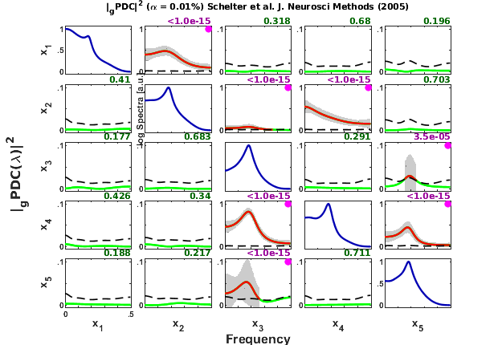

SCHELTER ET AL.(2005) - Five-dimension VAR[4]-process
Description:
Example from: Schelter, Winterhalder, Eichler, Peifer,Hellwig, Guschlbauer, L?cking, Dahlhaus & Timmer. Testing for directed influences among neural signals using partial directed coherence. J. Neurosci Methods 152:210-9, 2005.
https://dx.doi.org/10.1016/j.jneumeth.2005.09.001
Example Eq. (5) Five-dimension VAR[4]-process
Contents
- See also: mvar, mvarresidue, asymp_pdc, asymp_dtf, gct_alg,
- Interaction diagram
- Equation system
- Data sample generation
- MVAR model estimation
- Granger causality test (GCT) and instantaneous GCT
- PDC, threshold and confidence interval calculations.
- Plotting options set up, mostly cosmetics, used in xplot.m routine:
- Result from Figure 1 Schelter et al.(2005)
- Remarks:
See also: mvar, mvarresidue, asymp_pdc, asymp_dtf, gct_alg,
igct_alg, xplot, xplot_pvalues
% (C) Koichi Sameshima & Luiz A. Baccalá, 2022. % See file license.txt in installation directory for licensing terms.
clear; clc
Interaction diagram
Equation system
Data sample generation
flgPrintScreen = 'screen'; nDiscard = 5000; % number of points discarded at beginning of simulation nPoints = 2000; % number of analyzed samples points N = nDiscard + nPoints; % number of simulated points repmat('=',1,100) disp(' Schelter et al. J Neurosci Methods. 152:210-9, 2005.') disp(' Linear 5-dimension VAR[4]-process') disp(' x2==>x1 x3-->x2 x3==>x4 x3<-->x5 x4==x2 x5==x4'); repmat('=',1,100) randn('state', sum(100*clock)) % Variables initialization ei=randn(5,N); x1=zeros(1,N); x2=zeros(1,N); x3=zeros(1,N); x4=zeros(1,N); x5=zeros(1,N); for t=1:4 x1(t)=randn(1); x2(t)=randn(1); x3(t)=randn(1); x4(t)=randn(1); x5(t)=randn(1); end %chLabels = []; % or chLabels = {'x_1';'x_2';'x_3';'x_4';'x_5'}; for t=5:N x1(t) = 0.6*x1(t-1) + 0.65*x2(t-2) + ei(1,t); x2(t) = 0.5*x2(t-1) - 0.3*x2(t-2) - 0.3*x3(t-4) + 0.6*x4(t-1) + ei(2,t); x3(t) = 0.8*x3(t-1) - 0.7*x3(t-2) - 0.1*x5(t-3) + ei(3,t); x4(t) = 0.5*x4(t-1) + 0.9*x3(t-2) + 0.4*x5(t-2) + ei(4,t); x5(t) = 0.7*x5(t-1) - 0.5*x5(t-2) - 0.2*x3(t-1) + ei(5,t); end y=[x1' x2' x3' x4' x5']; % data must be organized column-wise u=y(nDiscard+1:N,:); fs = 1;
ans =
'===================================================================================================='
Schelter et al. J Neurosci Methods. 152:210-9, 2005.
Linear 5-dimension VAR[4]-process
x2==>x1 x3-->x2 x3==>x4 x3<-->x5 x4==x2 x5==x4
ans =
'===================================================================================================='
Warning: Using 'state' to set RANDN's internal state causes RAND, RANDI, and
RANDN to use legacy random number generators. This syntax is not recommended.
See <a href="matlab:helpview([docroot
'\techdoc\math\math.map'],'update_random_number_generator')">Replace Discouraged
Syntaxes of rand and randn</a> to use RNG to replace the old syntax.
Data pre-processing: detrending and standardization options
flgDetrend = 1; % 1: Detrending the data set flgStandardize = 0; % 0: No standardization % Checking data dimension [nChannels,nSegLength] = size(u); if nChannels > nSegLength u = u.'; [nChannels,nSegLength] = size(u); end % Detrending if flgDetrend for i = 1:nChannels, u(i,:) = detrend(u(i,:)); end disp('Time series were detrended.'); end % Standardization if flgStandardize for i = 1:nChannels, u(i,:) = u(i,:)/std(u(i,:)); end disp('Time series were scale-standardized.'); end
Time series were detrended.
MVAR model estimation
maxIP = 30; % maximum model order to consider. alg = 1; % 1 = Nutall-Strand MVAR estimation algorithm criterion = 1; % 1 = AIC, Akaike Information Criteria disp('Running MVAR estimation and GCT analysis routines.') [IP,pf,A,pb,B,ef,eb,vaic,Vaicv] = mvar(u,maxIP,alg,criterion); disp(['Number of channels = ' int2str(nChannels) ' with ' ... int2str(nSegLength) ' data points; MAR model order = ' int2str(IP) '.']);
Running MVAR estimation and GCT analysis routines. maxOrder limited to 30 IP=1 vaic=80559.909358 IP=2 vaic=76149.339241 IP=3 vaic=76089.565588 IP=4 vaic=76018.223442 IP=5 vaic=76039.675718 Number of channels = 5 with 2000 data points; MAR model order = 4.
%Testing the adequacy of MAR model fitting through Portmanteau test h = 20; % testing lag value MVARadequacy_signif = 0.05; % VAR model estimation adequacy significance % level aValueMVAR = 1 - MVARadequacy_signif; % Confidence value for the testing flgPrintResults = 1; [Pass,Portmanteau,st,ths] = mvarresidue(ef,nSegLength,IP,aValueMVAR,h,... flgPrintResults);
====================================================================================================
MVAR RESIDURES TEST FOR WHITENESS
----------------------------------------------------------------------------------------------------
Good MAR model fitting! Residues white noise hypothesis NOT rejected.
Pass = 0.026
st = 334.84
Granger causality test (GCT) and instantaneous GCT
gct_signif = 0.01; % Granger causality test significance level igct_signif = 0.01; % Instantaneous GCT significance level flgPrintResults = 1; % Flag to control printing gct_alg.m results on command window. [Tr_gct, pValue_gct] = gct_alg(u,A,pf, gct_signif,flgPrintResults); [Tr_igct, pValue_igct] = igct_alg(u,A,pf,igct_signif,flgPrintResults);
====================================================================================================
GRANGER CAUSALITY TEST
----------------------------------------------------------------------------------------------------
Connectivity matrix:
NaN 1 0 0 0
0 NaN 1 1 0
0 1 NaN 0 1
0 0 1 NaN 1
0 0 1 0 NaN
Granger causality test p-values:
NaN 0 0.3523 0.8853 0.1469
0.4999 NaN 0 0 0.4953
0.7829 0.0012 NaN 0.0934 0.0000
0.0945 0.1510 0 NaN 0
0.0668 0.5210 0 0.2855 NaN
====================================================================================================
INSTANTANEOUS GRANGER CAUSALITY TEST
----------------------------------------------------------------------------------------------------
Instantaneous connectivity matrix:
NaN 0 0 0 0
0 NaN 0 0 0
0 0 NaN 0 0
0 0 0 NaN 0
0 0 0 0 NaN
Instantaneous Granger Causality test p-values:
NaN 0.4381 0.2081 0.2415 0.7540
0.4381 NaN 0.9888 0.4264 0.3667
0.2081 0.9888 NaN 0.1312 0.9906
0.2415 0.4264 0.1312 NaN 0.3191
0.7540 0.3667 0.9906 0.3191 NaN
>>>> Instantaneous Granger Causality NOT detected.
====================================================================================================
PDC, threshold and confidence interval calculations.
PDC analysis results are saved in c data structure. See asymp_pdc.m,
metric = 'diag'; % Generalized PDC estimation nFreqs = 128; % Number of frequency points to consider alpha = 0.0001; % Significance level for PDC/DTF null hypothesis test c = asymp_pdc(u,A,pf,nFreqs,metric,alpha); c.Tragct = Tr_gct; % Assigning GCT results to c struct variable. c.pvaluesgct = pValue_gct;
Plotting options set up, mostly cosmetics, used in xplot.m routine:
switch lower(flgPrintScreen) case 'print' flgMax = 'TCI'; flgSignifColor = 1; % black + gray flgScale = 3; % [0 max(flgMax)] otherwise % e.g., 'screen' flgMax = 'TCI'; flgSignifColor = 3; % red + green flgScale = 2; % [0 1]/[0 .1]/[0 .01] end
flgColor parameter for PDC matrix-layout plot.
flgColor = [0]; % Plotting option for automatic scaling for small PDC % values. % if flgColor = 0, y-axis scale = [0 1] % elseif flgColor = 1, xplot routine rescale % the y-axis automatically according to following rules: % If .001<= max(|PDC(f)|^2) < .01 background-color = light-blue, % so that y-axis scale = [0 .1] % elseif max(|PDC(f)|^2) < .001 background-color = light-purple % and y-axis = [0 .01]. % 1 2 3 4 5 6 7 flgPrinting = [1 1 1 2 3 0 2]; % Example: Plot everything, except coh2. % blue | | | | | | 7-- {0:5} Spectra (0: w/o; 1: Linear; 2: Log; % | | | | | | 3: PDC2; 4: Linear normalized; % | | | | | | 5: Log spectra + PDC2) % gray | | | | | 6-- {0:1} Coh2 (0: w/o Coh2; 1: w Coh2) % dark-purple | | | | 5-- {0:3} Print GCT p-values and dot-mark significant % or dark-green | | | | connectivity channel-pair (0: w/o; % | | | | 1: p-values; 2: dot-mark +GCT; % | | | | 3: p-values + dot-mark significant GCT) % dashed-blue | | | 4-- {0:4} Confidence interval (0:w/o; 1: Dashed-lines; % | | | 2: Shaded-plot; 3: Error-bar 1; 4: Error-bar 2 % red | | 3-- {0:1} Significant PDC2|DTF2 in red lines % dashed-black | 2-- {0:1} Patnaik threshold level in black dashed-lines % green 1-- {0:1} PDC2/DTF2 in green lines or black w/o statistics, % see flgSignifColor bellow for line color selection. w_max=fs/2; strID = 'Schelter et al. J. Neurosci Methods (2005)'; [h,hxlabel,hylabel] = xplot(strID,c,flgPrinting,fs,w_max,chLabels, ... flgColor,flgScale,flgMax,flgSignifColor); xplot_title(alpha,metric,'pdc',strID);
Result from Figure 1 Schelter et al.(2005)
Figure 1, page 212.
Remarks:
- Compare the plot with Figs. 1 and 3 (see pages 212 and 215 Schelter et al., 2005). As you may notice, the power spectrum of , as well as , differ significantly. Our guess is that Schelter and collaborators may have used slightly different parameters from what they stated in Eq. 5.
- Note that, for linear model with balanced innovation, the maximum of PDC estimates is roughly proportional to the autoregressive model coefficients. As we are plotting , amplitude is roughly proportional to the square of VAR coefficients.